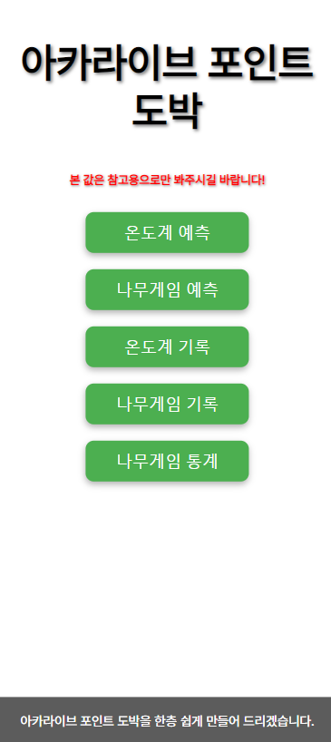
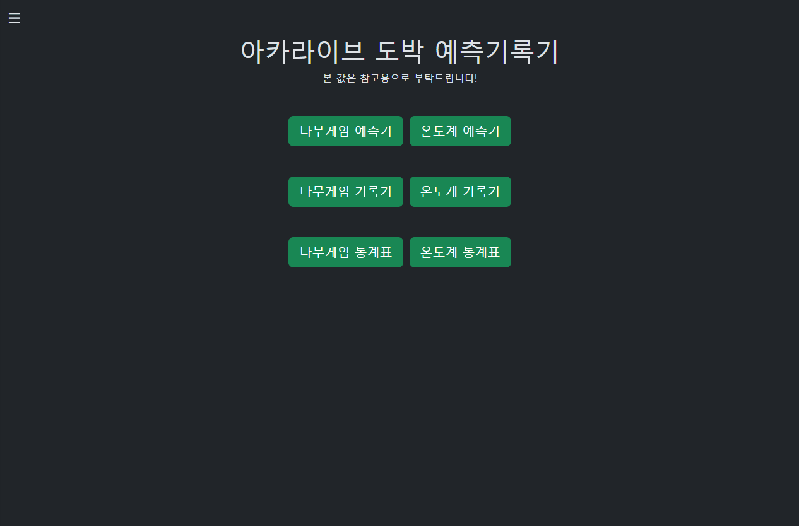

이 문서는 25년형 아카라이브 도박 예측 기록기를 소개하고, 전작과 어떤 차이가 있는지, 어떻게 사용하는지 그 방법을 설명합니다.
이 문서의 내용에 오류가 있거나 시스템에 관한 질문 사항이 있으면 아카라이브에 @Ruma_ 멘션 후 문의합니다.
| 버전 | 일자 | 이력사항 |
|---|---|---|
| 1.0 | 2025.03.18 | 최종 배포 |
시스템 사용을 위해서는 최소 1Mbps 이상의 인터넷 연결이 필요하며, 최신 버전의 웹 브라우저(Chrome, Firefox, Safari, Edge 등) 사용을 권장합니다.
또한 모바일 화면일 경우 자료가 안 보일 수 있으니 세로 모드 보다는 가로 모드를 추천합니다.
(전)

(후)

메인 화면 입니다. 이 버튼들을 누르면 해당 화면으로 이동합니다.
(전)
(후)
예측기는 온도계와 나무게임의 결과를 예측하여 참고할 수 있도록 도와주는 도구입니다. 사용자는 예측된 데이터를 참고하여 패턴을 분석할 때 도움을 줍니다.
만약 예측 과정 중 예기치 않은 오류가 뜨면 999 가 뜹니다.
⚠️ 중요: 예측 값은 참고용이며, 정확한 결과를 보장하지 않습니다.
(전)
(후)
기록기는 온도계와 나무게임의 데이터를 저장 및 분석하는 도구입니다. 사용자는 기록된 데이터를 조회하고, 패턴을 분석하여 향후 전략을 세울 수 있습니다.
사용 방법은 검색창에 원하는 회차를 입력 후 조회를 누르시면 됩니다.
필요 시 CSV 다운로드 버튼을 눌러 현재 페이지의 데이터를 저장할 수 있습니다.
한 페이지에 1 ~ 99999999개 까지 조회가 가능합니다.
(전)
(후)
온도계 및 나무게임의 데이터를 분석하여 통계를 제공하는 도구입니다. 사용자는 각종 확률, 분포 및 패턴을 시각적으로 확인할 수 있으며, 이를 활용하여 보다 정교한 분석을 수행할 수 있습니다.
Url의 ?select=1000 값 변경으로 통계 범위를 조절할 수
있습니다.
?select=500 → 최근 500개 데이터 조회
?select=1000 → 최근 1000개 데이터 조회
📌 값이 클수록 더 많은 데이터를 조회할 수 있으나, 로딩 시간이 증가할 수 있습니다.
Ver 3.0에서는 기술 스택 및 데이터 저장 방식이 변경되었으며, 이를 통해 데이터 처리 속도 및 사용자 경험이 대폭 향상되었습니다.
| 성능 개선 항목 | 기존 방식 | 새로운 방식 | 개선 효과 |
|---|---|---|---|
| 프레임워크 | Nginx + Python + CSV | Spring Boot + JPA + MySQL | 서버 성능 향상 |
| 데이터 저장소 | CSV 파일 저장 후 참조 | MySQL DB 저장 후 참조 | 데이터 처리 속도 증가, 동시 접근 시 안정성 향상 |
| 예측기 모델 | Python 머신러닝 예측 | 학습된 모델 기반 예측 | 더 높은 정확도의 예측 결과 제공 |
| 성능 최적화 | 별도 캐싱 미적용 | 캐싱 적용 | 반복 조회 시 성능 향상, 응답 속도 개선 |
| 햄버거 메뉴 개선 | 모든 메뉴 펼침 방식 | 대단원 먼저 보여주고 클릭 시 소단원 표시 | UI 가독성 및 사용자 경험 개선 |
| API 호출 방식 | 동기식 요청 처리 | 비동기 API 및 최적화된 DB 조회 적용 | 대량 데이터 처리 시 속도 향상 |
❓ Q: 예측 값이 항상 999로 뜹니다.
✅ A: 서버 오류 또는 데이터 부족으로 인해 발생할 수 있습니다. 잠시 후 다시 시도하거나, @Ruma_에게 문의하세요.
❓ Q: CSV 다운로드가 안 됩니다.
✅ A: 브라우저 설정에서 다운로드 차단이 되어 있는지 확인하세요.
❓ Q: 통계 데이터가 너무 많아서 느립니다.
✅ A: URL의 ?select=1000 값을 조절하여 적절한 데이터 범위를
선택하세요.
❓ Q: 시간이 지나도 예측 사이트 업데이트가 안됩니다.
✅ A: 예측을 하는데 시간이 필요합니다. 보통 예측이 완성되는 시간은 15초 내외이므로 기다려 주시길 바랍니다.